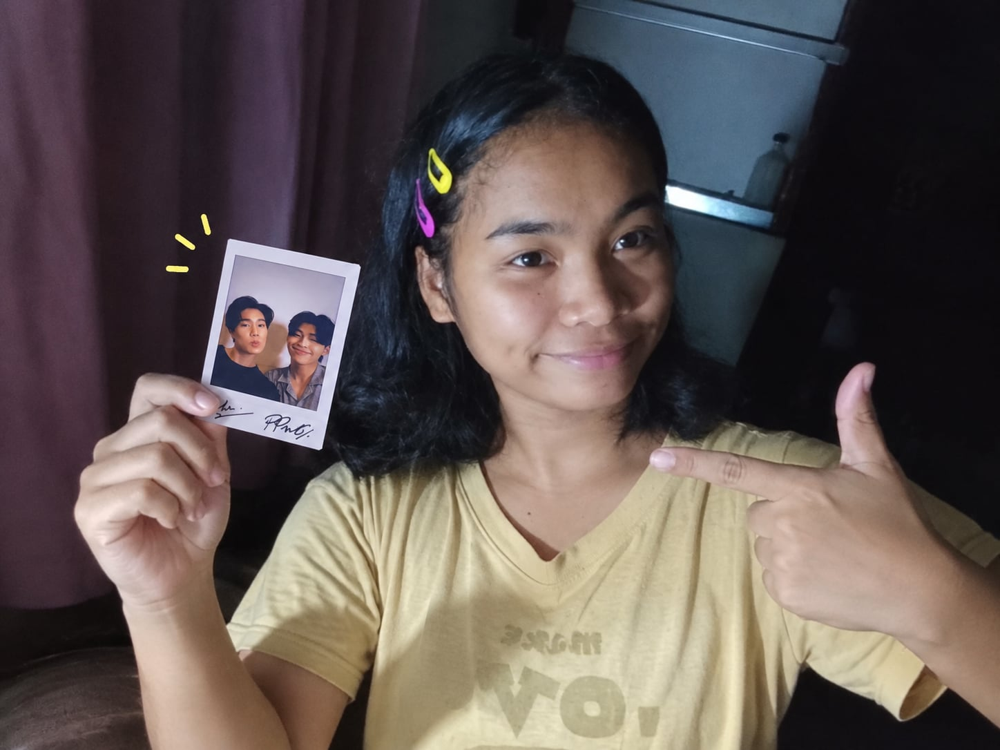

MENU
Home
Profile
Gallery
About
Last Page
|
HOME |
PROFILE |
GALLERY |
ABOUT |
LAST PAGE
|

|
Personal Information
Name: ANGEL
Nickname: Gelie
Age: 20
Birthday: Oct. 19, 2006
Year Started being a Fan: Since 2024
Favorite Series of PONDPHUWIN: We Are,Me and Thee Series
Favorite Lines:"He is not a Faen, not a friend, but something in between-Phuwin to Pond
|
About Miamii
Hi! Welcome to my little fanspace.I created this website to share my love and apprecition to PondPhuwin.
So I'm a girl who really enjoy watching series, the romantic series, comedy and thriller .This website is all about me as a fan of PondPhuwin.
If you'll ask me why PondPhuwin? It's because I admire them alot, I love the way they care for each other-on/off cam, the way they appreciate and comfort their fans
They are so talented, sincere, everything.
Being a fan is hard sometimes, because you won't be where the events they had,especially if your broke, you can't physically comfort them everytime they felt down.
|
A Little Message ♡
To my fellow fans, lets continue supporting PONDPHUWIN, and let's all hope they will stay on each other side until the very end.And to my two babies-PP,
may you continue shine,achieve your dreams and create more wonderful memories.I'll always cheer !
|
|